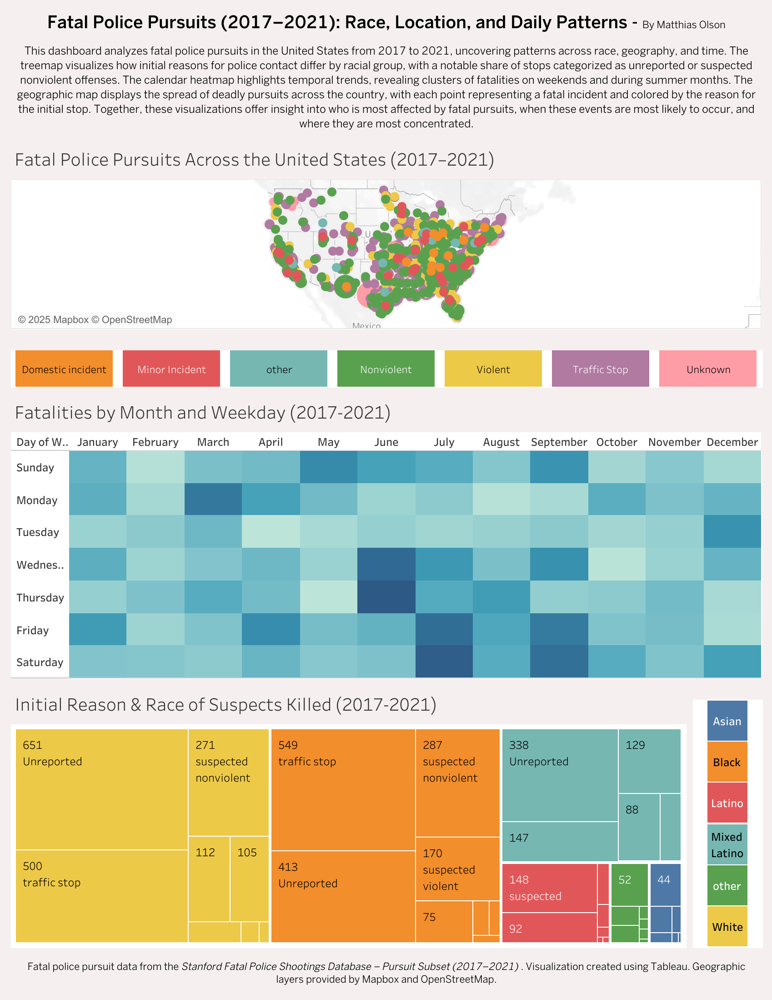
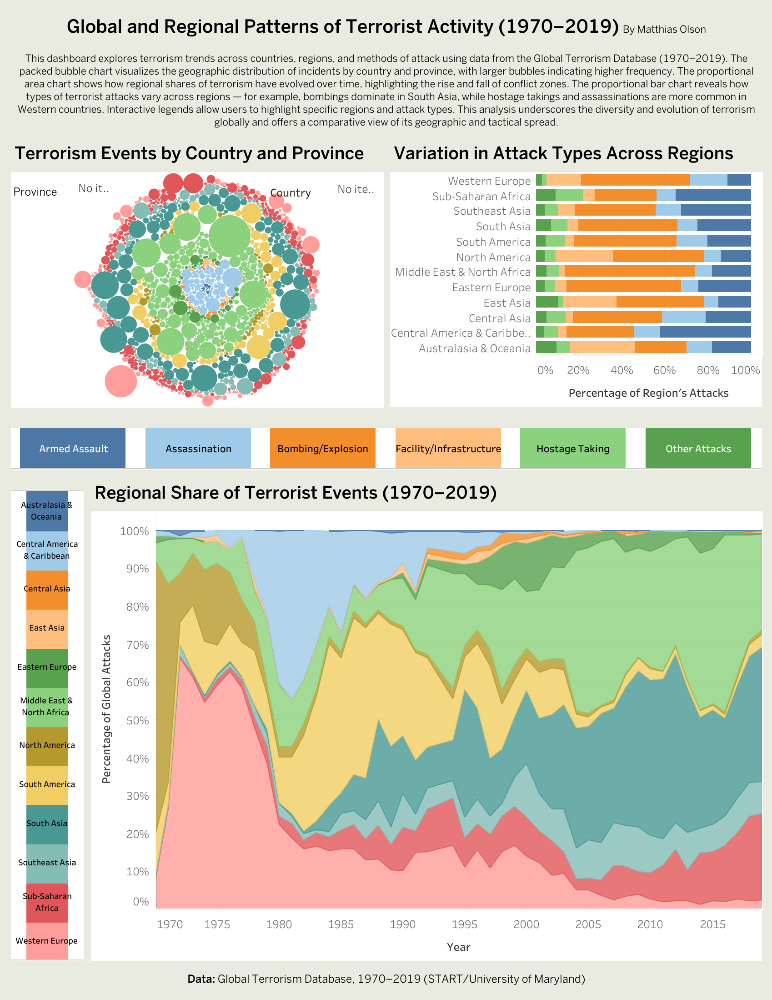
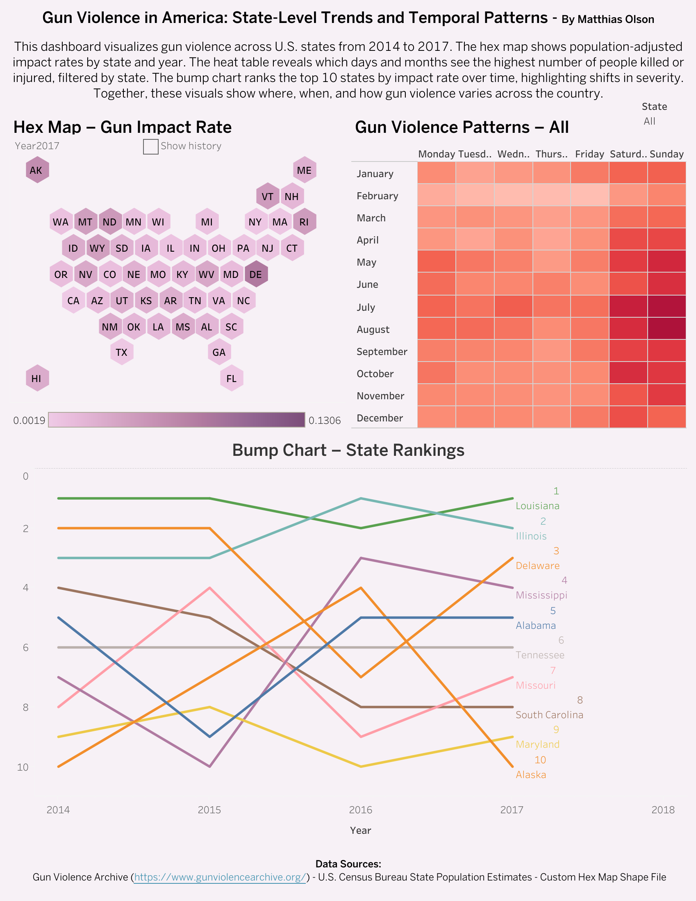
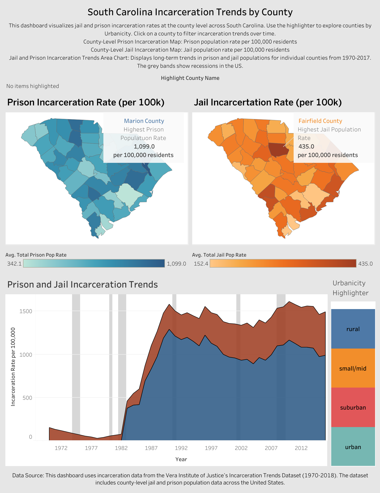
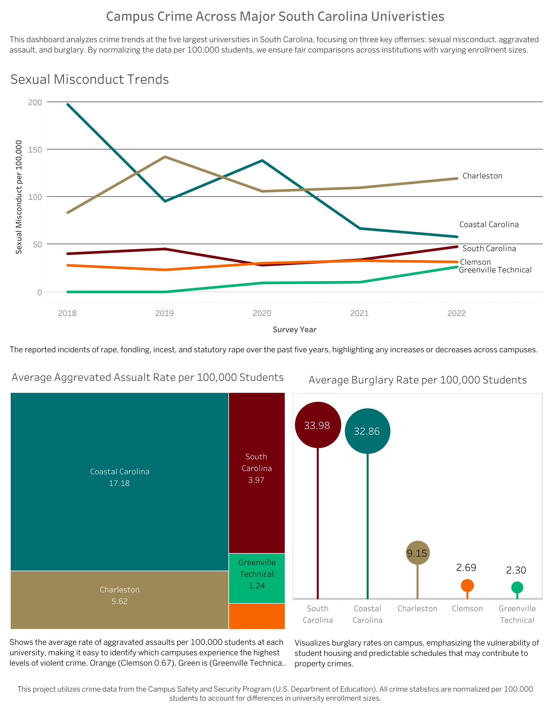

About Me
I'm a Junior at Pomona College majoring in Economics. I play wide receiver on the Pomona football team and have a strong interest in public policy, data, and econometrics. You can reach me at mlos2022@mymail.pomona.edu.
If you'd like to explore and interact with the full Tableau visualizations from these dashboards, you can visit my public profile here: View My Tableau Dashboards.
Fatal Police Pursuits Dashboard

In recent years, growing public attention has focused on the often-deadly consequences of police interactions, but one area that remains key is the fatality risk associated with police vehicle pursuits. These high-speed chases, sometimes initiated as a result of minor infractions, can often escalate quickly and end in fatality. Many of the fatalities associated with police vehicle pursuits aren’t just those being pursued, but also passengers, bystanders, and even police officers themselves. Furthermore, we see that Black and Latino individuals are disproportionately affected, raising urgent questions about how race, geography, and decision-making shape deadly outcomes. This project uses public data on fatal police pursuits from 2017 to 2021 to examine when these incidents happen, where they occur and who they affect. Through a combination of three visualizations built in Tableau, the dashboard aims to surface patterns that are often lost in raw statistics. These patterns often point to broader systemic issues in policing, accountability, and risk distribution. The analysis will draw on the Stanford SFC Pursuit Fatalities dataset, which compiles publicly documented deaths associated with police pursuits in the United States from 2017 through 2021. The dataset includes detailed information about each incident, including the date, initial reason for the police encounter, race of the individuals involved, their role in the incident (driver, passenger, bystander, etc.), and the number of people killed. These variables enabled the construction of three Tableau visualizations designed to surface patterns that may otherwise go unnoticed.
The first visualization on the dashboard is a national map of fatal police pursuits, where each point represents a deadly police interaction between 2017 and 2021. Points are color-coded by the initial reason for the police encounter, with categories including suspected violent crime, traffic stop, minor incident, domestic incident, and unreported. This design enables a layered geographical and categorical analysis. While the map covers the entire United States, noticeable clusters emerge in the South and Southwest, which suggests regional disparities in the frequency or recording of fatal pursuits. A striking finding from this map is the frequency of unreported and nonviolent reasons for initiating the encounter. In many cases, police pursued individuals for traffic violation of unspecified causes, yet these encounters escalated to lethal outcomes. This supports a growing body of evidence that questions the need of police response in routine stops. Although the dataset does not include population-adjusted rates, the density of dots in certain regions suggests that police pursuit-related fatalities are not evenly distributed nationwide. This visualization reinforces the argument made in the Time Magazine article, If We Want to Reduce Deaths at Hands of Police, We Need to Reduce Traffic Stops, which calls for reducing the frequency of traffic stops as a means of preventing deadly outcomes (Johnson, 2023). This statement can be supported through this visualization when you see the sheer amount of deaths caused by a simple traffic stop. The article emphasizes how low-level stops can quickly escalate into fatal encounters, especially in overpoliced communities. The map’s display of widespread fatalities tied to minor reasons offers a visual confirmation of this concern and highlights the need for systemic traffic enforcement reform. The article also notes that many jurisdictions continue to treat traffic stops as essential tools for law enforcement, despite evidence of their unpredictability. By placing the burden of reform on policy rather than individuals, the article pushes for institutional change, an argument visually reinforced by this data-driven map.
The second visualization in the dashboard is a treemap that breaks down fatal police pursuits by both race and the initial reason for the encounter. Each block represents a combination of these two variables, with the block size corresponding to the number of fatalities and the color indicating the individual’s racial group. This layout makes it easy to compare both the volume and type of fatal incidents across racial lines. Unreported reasons again appear prominently across all groups, but the distribution within specific categories reveals stark disparities. When controlling for racial population size, Black and Latino individuals are disproportionately represented in categories such as traffic stop and unreported. In contrast, Asian individuals are far less represented across all categories. When taking into account racial population size, whites are similarly underrepresented across all categories of fatal police interactions. These patterns suggest that not only are people of color more likely to be involved in fatal police pursuits, but that those encounters are more often initiated for nonviolent or poorly documented reasons. The treemap makes these disparities highly visible, particularly when paired with the race highlighter, which allows you to isolate specific races for a more focused analysis. These findings echo national trends documented in The Washington Post’s Police Shootings Database, which shows that Black Americans are killed by police at more than twice the rate of white Americans (Godfrey, 2022). Although the treemap more specifically focuses on pursuit-related deaths rather than shootings, the disproportionate impact on communities of color is consistent. The article also reveals that in most fatal police encounters, officers are rarely charged, reflecting a deeper issue of accountability within law enforcement. It emphasizes how systemic disparities in policing outcomes are not isolated incidents, but part of a broader national pattern that disproportionately endangers marginalized populations.
The third visualization is a calendar style heatmap that displays the number of fatal police pursuit incidents by day of the week and month, aggregated over the five-year period from 2017 to 2021. Each square is representative of a day to month combination, which darker squares indicating a higher number of deaths. The heatmap reveals that fatal encounters occur across all months and days, but certain patterns stand out. For example, the summer months (June and July) tend to show higher concentrations of fatal police pursuits than in the fall and spring. Within July, we see a higher concentration of fatalities on the weekends, especially Friday and Saturday. This aligns with broader criminal patterns suggesting that high-activity periods (such as the summer or weekends) correspond with increased deadly police to civilian encounters. This visualization suggests that reform efforts must consider not just where and whom these incidents effect, but also when they are most likely to occur.
This analysis into the inequalities associated with fatal police pursuits echo several key concepts discussed in class (Week 5 Race and Crime). In particular, the disproportionate number of fatalities involving Black and Latino individuals following routine or unreported stops reflects the racial disparities described in the lecture on racial profiling in police stops. The slides note that “people of color are more likely than whites to be searched during traffic stops,” and that this can occur even when driving habits do not differ significantly. The treemap and map in my dashboard visually reflect that reality as many fatal outcomes begin with minor or vague reasons for stopping people of color. The lecture also distinguished between statistical discrimination and preference-based discrimination. Even if stops were based on maximizing arrest outcomes, as the slides explore through equilibrium modeling, the burden of risk still falls disproportionately on marginalized groups. My project highlights how these seemingly “routine” encounters can have deadly consequences, especially when structural bias or lack of transparency shapes how officers initiate contact.
Global Terrorism Dashboard
Gun Violence Dashboard
U.S. Crime Trends Dashboard

Understanding crime trends in the United States requires a comprehensive analysis of
both historical data and regional patterns. This study utilizes crime data from the FBI Crime Data
Explorer, covering the years 1960 to 2022, in order to examine changes in violent and property
crime rates. Through the usage of interactive Tableau visualizations, we explore murder rate
trends across different U.S. Census regions, track changes in crime rates by state, analyze
property crime trends in South Carolina, and add in a region-based interactive legend for further
exploration. By comparing these findings with insights from John Gramlich’s article What the
data says about crime in the U.S., this analysis looks at crime trends within broader social and
political discussions. Additionally, it demonstrates how crime reporting methodologies impact
public perception and policy responses. This report presents a data-driven perspective on crime,
specifically looking into both long-term declines and regional disparities while addressing key
limitations in crime measurement.
The dataset used for this analysis is sourced from the FBI Crime Data Explorer, which
compiles crime statistics from local, state, and federal law enforcement agencies. The key
variables examined include murder rates, violent crime rates, and property crime categories such
as burglary, larceny-theft, and motor vehicle theft. To provide an easier/broader comparative
framework, states are categorized into U.S. Census regions, to allow for regional analysis. While
the dataset is extensive, it is important to note that limitations occur due to crime measurement
methodologies. As Gramlich highlights, FBI data primarily captures crime reported to law
enforcement, leaving out unreported incidents that may have significant impacts on overall crime
trends. In contrast, the Bureau of Justice Statistics relies on victimization surveys, capturing both
the reported incidents and the unreported ones. The discrepancy in data collection methods leads
to differences in crime rate estimates, which can have big effects on public perception and policy
decisions. These challenges illustrate the complexities of measuring crime accurately and
emphasize the need for cautious interpretation of statistical trends.
Gramlich’s analysis reveals key insights about crime trends, public perception, and
statistical challenges when trying to accurately measure crime. My visualizations support his
claim that crime rates have significantly declined since the 1990s. The FBI data confirms that
violent crime decreased by 49% and property crime by 59% from 1993 to 2022 (Gramlich,
2024). This trend is clearly captured in my scatterplot and becomes most apparent in the early
2000s. Additionally, Gramlich highlights that larceny-theft is the most frequent property crime,
followed by motor vehicle theft and burglary. Gramlich’s statements are evident in the property
crime trends in South Carolina graph where the vast majority of theft is larceny-theft (Gramlich,
2024). Regional disparities are also evident, as Gramlich notes that states such as New Mexico
and Alaska experience higher violent crime rates, while states like New England have lower
rates. My regional line chart supports this, showing that the South consistently leads in murder
rates. However, my analysis also highlights data limitations, similar to those raised by Gramlich.
The FBI dataset excludes unreported crimes, meaning my visualization primarily reflects crimes
officially recorded by law enforcement agencies. The Bureau of Justice Statistics survey, which
captures unreported crimes, provides a broader perspective but is not incorporated into our
dataset. This discrepancy between reported and unreported crimes highlights the challenges in
fully understanding crime trends and the need for more integrated data collection methodologies.
Gramlich emphasizes that “Most violent and property crimes in the U.S. are not reported to
police, and most of the crimes that are reported are not solved” (Gramlich, 2024). This statement
further illustrates the limitations of relying solely on law enforcement data and highlights the
potential underrepresentation of actual crime occurrences in my analysis.
The relationship between crime trends and the death penalty is important context for
analyzing South Carolina’s approach to criminal justice. As explored in the lecture on death
penalty, one of the most contested debates in criminology is whether capital punishment serves
as an effective deterrent for violent crime. South Carolina has historically maintained one of the
strongest pro-death penalty stances in the country, with numerous executions and upholding
strict laws regarding capital punishment. However, empirical evidence remains mixed on the
effectiveness of capital punishment. The Supreme Court’s moratorium on capital punishment
(1972-1976), marked by a reference band in my visualization (Murder Rate Trend by Region),
provides a natural experiment to examine whether the absence of the death penalty led to a surge
in violent crime. My analysis of regional murder rates suggests that the South, which has
consistently had the highest rates of execution, also experiences the highest murder rate. This is
in direct contradiction to the deterrence theory. The lecture similarly explains that states with
higher execution rates do not necessarily exhibit lower homicide rates. Overall, my crime trend
analysis suggests that the death penalty may not be an effective tool in reducing violent crime.
Rather than serving as a deterrent there may be other political factors, such as poverty, education,
and policing strategies, that have a more significant impact on crime rates.
Incarceration Rates Dashboard

The incarceration rate in the U.S declined from 2019 to the lowest rate since 1995,
marking a substantial reversal after decades of growth in prison and jail populations (Gramlich,
2021). In its peak between the years 2006 and 2008, the U.S incarcerated 1,000 people per
100,000 adults (a rate far higher than in other countries). The number of incarcerated individuals
declined dramatically to 810 per 100,000 in 2019 due criminal justice policies changes, declining
crime rates, and sentencing reform. Despite this massive drop in the incarceration rate, the
United States still has the highest incarceration rate in the world at 639 per 100,000 residents.
South Carolina’s incarceration trends closely mimic that of the national decline; however,
significant disparities do exist at the county level. While some areas have seen reductions in jail
and prison populations, others continue to incarcerate at disproportionately high rates. These
counties are largely influenced by local policies, economic conditions, and well as law
enforcement practices. Gramlich writes, “While the total number of people incarcerated in the
U.S. has dropped, jail populations remain significant, largely due to pretrial detention and local
policies” (Gramlich, 2021). It is important to understand how rural-urban inequality and county-
level legal framework affect patterns of incarceration across South Carolina in order to explain
why some areas have not seen the same level of decline that has been seen with the national
average. This paper builds on national findings by examining county-level incarceration trends in
South Carolina, focusing on prison and jail populations, regional disparities, and the long-term
effects of sentencing reforms.
The project utilizes South Carolina incarceration data from the Vera Institute’s dataset,
which provides county level jail and prison population data. The analysis specifically focuses on
2018 due to it being the most recent year with complete data. Three key measures were examined
in the project: Total Jail Population per 100,000 residents, Total Prison Population Rate per
100,000 residents, and Urbanicity which helped distinguish between urban, suburban, small/mid
metro, and rural counties to explore regional disparities. The dataset was processed in Tableau,
where county-level incarceration rates were visualized via choropleth maps (highlighting the
differences in jail/prison populations across counties in South Carolina). A stacked area chart was
created in order to look at long term incarceration trends in South Carolina.
South Carolina’s jail incarceration rates vary significantly across county, with Fairfield
County reporting the highest rate of jail incarceration at 435 per 100,000 residents. The
Choropleth map (Figure 1) highlights that rural counties in South Carolina tend to have much
higher jail incarceration rates than suburban and small/mid metro areas. This might be a result of
limited access to alternative sentencing programs or possibly a higher reliance on pretrial
detention. In contrast, small/mid metro counties such as Richland and Berkeley generally exhibit
lower rates of jail/prison incarceration. This could be due to greater access to legal resources or
deterrence programs. The persistently high jail/prison incarceration rates in smaller counties like
Fairfield could suggest that state and federal sentencing reforms have had a limited impact at the
local level, where economic conditions continue to drive disparities.
South Carolina’s prison incarceration rates vary widely by county, with Marion County
recording the highest rate at 1,099 per 100,000 residents. The choropleth map (Figure 2)
highlights that rural counties tend to have prison population rates. Once again, this might be due
to limited access to legal resources and economic conditions that influence crime and sentencing
tendencies. In contrast, more suburban counties tend to have lower prison incarceration rates, for
example Lancaster County with 587.1 per 100,000 residents incarcerated. Suburban Counties
may benefit from more investment in rehabilitation and alternative sentencing programs.
South Carolina’s incarceration trends have undergone significant changes from 1970
through the early 2000s while peaking around 2005. The trend seen with South Carolina aligns
almost perfectly with the national tough on crime policy in the early 1990s. The policy
introduced mandatory minimum sentences, harsher laws around drugs, and expanded the
capacity of prisons. Figure 3 illustrates this increase in incarceration beginning in the 1980s and
continuing into the 1990s in line with this tough on crime policy as well as a more general mass
incarceration national trend. Since 2007, incarceration rates in South Carolina have steadily
declined. This steady decline can be attributed to policy reforms, changes in judicial sentencing,
and a reduction in crime rates (Gramlich, 2021). However, jail populations remain high in certain
counties, suggesting that local policies, economic conditions, and local law enforcement
practices still contribute to incarceration disparities. While South Carolina’s overall trend is in
line with what we see nationally, the persistence of high incarceration rates in specific counties
highlights ongoing systemic challenges at the local level.
South Carolina’s incarceration rates vary widely by county. To address these disparities,
policymakers should focus on expanding reform policies and pretrial alternatives to reduce
unnecessary jail time. Furthermore, investment into reentry programs to reduce the chance of
reincarceration and ensuring sentencing reforms are applied equitably across all counties. These
measures could help sustain South Carolina’s declining incarceration trend while addressing
persistent regional disparities. While incarceration can serve as a deterrent to crime in some
cases, excessive reliance on imprisonment may have diminishing returns, highlighting the need
for balanced policies that promote rehabilitation as well as public safety. These measures could
help sustain South Carolina’s declining incarceration trend while addressing persistent regional
disparities.
Campus Crime Dashboard

In The Reality of Crime on Campus, Todd S. Purdum (1988) explores the increasing
awareness of crime on college campuses, challenging the traditional view of universities as a
safe space. The article highlights incidents of violent crimes, including sexual assaults, murders,
as well as racial brawls, which have forced institutions across the United States to reevaluate
their security policies and student conduct policies. Purdum notes that while crime statistics on
campuses remain incomplete due to inconsistent reporting and reluctance to disclose criminal
data, evidence suggests an increase in both physical and sexual violence. Many universities fear
that openly sharing crime rates could damage their reputations, leading some to underreport
incidents. As Dr. Bernice Sandler notes, “ 'Schools don't like to air their dirty linen in public,”
showcasing universities tendencies to downplay or mis report violent crimes for fear of
developing a negative public image (Purdum, 1988). While FBI reports claim that violent crime
on campuses remained relatively stable from 1980 to 1986, surveys suggest that many incidents,
especially sexual assault, go unreported.
Purdum categorizes campus crime into two main types: crimes committed by outsiders
and crimes committed by students against one another. Crimes committed by outsiders including
thefts, assaults, and sexual offenses occur predominately on urban campuses. The latter is more
complex and often linked to alcohol abuse as well as fraternity culture. Studies indicate that
alcohol plays a major role in sexual assaults, with some universities reporting that nearly all
reported cases involve intoxication. William Schafer, director of student conduct at the
University of Colorado, estimates that “100 percent of our sexual-assault cases are alcohol-
related” (Purdum, 1988). In response, some institutions have increased security, implemented
awareness programs, and revised policies regarding student behavior and alcohol consumption.
Ultimately, Purdum argues that college campuses, once seen as academic safe havens,
must confront the harsh reality that they are not immune to the dangers of society.
Building upon this analysis, the article How Prevalent Is Campus Sexual Assault in the
United States? by Fedina, Holmes, and Backes (2016) delves deeper into the scope of campus
sexual victimization. The study finds that while estimates vary wildely due to differences in
definitions and methodologies, all reviewed studies conclude that a significant amount of college
students face sexual victimization. The most common forms of sexual victimization reported
include unwanted sexual contact and sexual coercion, then followed by incapacitated rape and
attempted or completed forcible rape (Fedina et al., 2016). Factors influencing prevalence rates
include gender, demographic background, and grade level. Higher risk students include
underclassmen, racial and ethnic minorities, and students with disabilities. Furthermore, the
study highlights that most of the research on campus sexual assault focuses primarily on
heterosexual white women attending a four-year college, which leaves gaps in understanding
victimization among other population groups. The authors emphasize the need for standardized
definitions and measurement techniques in future research. Additionally, they advocate for
campus-specific prevention strategies, especially targeting the dynamics of coercion and alcohol-
facilitated assault.
Analysis of National Campus Crime Trends
From 2018 to 2021, the national trend for campus crime per 100,000 full time students
reveal several significant key shifts and trends. Burglary rate continued their long-term decline,
dropping from approximately 66 incidents per 100,000 students in 2018 to 47 incidents per
100,000 students by 2021. In contrast, forcible sex offenses showed a fairly consistent trend from
2018 to 2021, decreasing from approximately 85 incidents per 100,000 in 2018 students to 75
incidents per 100,000 students in 2021. The overall campus crime rate remained relatively stable
going from 197 incidents per 100,000 students in 2018 to 169 incidents per 100,000 students in
2021.
When comparing these crimes to the top 5 South Carolina universities, notable
similarities differences emerge. From 2018 to 2021, the national average burglary rate was 57.75
incidents per 100,000 students. Greenville Technical College (2.30 incidents per 100,000
students) and Clemson (2.69 incidents per 100,000 students) report burglary rates far below that
of the national average. This may indicate that these campus benefit from strong security
measures, smaller student population base making more manageable or less urban exposure as
discussed in In The Reality of Crime on Campus (Purdum, 1988). In contrast, South Carolina
(33.98 per 100,000) and Coastal Carolina (32.86 per 100,000) report burglary rates that are
significantly lower than the national average but remain notably higher than those of smaller or
suburban campuses like Greenville Technical and Clemson. These rates suggest that regional or
campus-specific factors, such as urban environments or a higher density of valuable student
property, may contribute to elevated burglary incidents (Purdum, 1988).
The assault tree visualization highlights the significant disparities in aggravated assault
rates among South Carolina universities. Coastal Carolina reports the highest rate at 17.18 per
100,000 students, nearly three times higher than Charleston (5.62) and significantly above South
Carolina (3.97). In contrast, Greenville Technical (1.24) and Clemson (0.63) exhibit much lower
rates, suggesting more effective safety measures or less exposure to violent incidents. Coastal
Carolina’s elevated rate likely reflects challenges such as regional crime or campus size while
Charleston’s more moderate rate points to similar, though less severe, issues. The low rates at
Clemson and Greenville Technical may result from smaller campus sizes, stronger preventative
measures, or safer surrounding communities.
The national trend line for forcible sex offenses per 100,000 students remained relatively
stable from 2018 to 2021, averaging 80 incidents per 100,000 students. In contrast, Coastal
Carolina’s trend line shows a sharp downward trajectory during the same period. In 2018, the
university reported approximately 200 incidents per 100,000 students, far exceeding the national
average. However, instead of remaining stable like the national trend, Coastal Carolina’s rate
dropped significantly each year, falling below 60 incidents per 100,000 students by 2022. This
steep decline suggests that Coastal Carolina implemented effective interventions, such as
improved prevention programs, policy reforms, or heightened security measures, leading to a
measurable reduction in reported cases. Charleston (102 per 100,000 - 2018-2022), however,
experienced an upward trend, surpassing all other major South Carolina universities after 2020,
indicating a growing issue that may require stronger prevention efforts. South Carolina (45 per
100,000 - 2018-2022) maintained a relatively steady trend, closely mirroring the general trend of
the national averages, suggesting that its safety measures have had neither a strong positive nor
negative impact on reported incidents. Clemson (of 30 per 100,000 students 2018-2022) and
Greenville Technical College (15 per 100,000 2018-2022) reported consistently lower rates of
sexual misconduct, with little fluctuation over time. Their stable trend lines suggest that fewer
incidents occur which may be a result of their suburban status (Purdum, 1988).
Increasing the severity of punishments for campus crimes could serve as a powerful
deterrent, reducing incident rates by increasing the perceived consequences of criminal behavior.
These methods may not be effective assuming that a good portion of violent crimes on campus
are alcohol related. However, stricter disciplinary actions, such as mandatory expulsions for
violent offenses and harsher legal consequences for sexual misconduct could discourage
potential offenders.